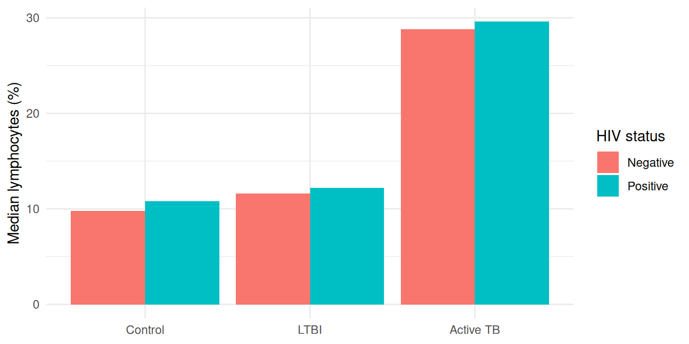

library(reticulate)
use_python(here::here(".venv", "bin", "python")) # on Windows: ".venv/Scripts/python.exe"Using one dataset in both R and Python
Tutorial 2: pass an R data frame to pandas and back with reticulate
Tutorial
R
Python
reticulate
pandas
Use reticulate to turn an R data frame into a pandas DataFrame and back, so R and Python can work on the same data in one document, and learn what changes when the data crosses over.
NoteWhat you’ll learn
- Connect R to a Python environment with
reticulate - Send an R data frame to Python as a pandas DataFrame (
r.in Python) - Bring a pandas DataFrame back to R (
py$in R) - Know which column types change on the way, and the two conversions that quietly corrupt data
ImportantSimulated data
This tutorial uses the same simulated BAL study extract as Tutorial 1. No row describes a real person.
Why use both?
R and Python each have strengths. R has dplyr, ggplot2 and a deep set of statistics and Bioconductor packages; Python has pandas, scikit-learn and most machine learning tools. With reticulate, a single Quarto document (or R session) can run both languages and pass data between them, without saving and re-reading CSV files in between.
1. Set up reticulate
reticulate needs a Python installation with pandas. Using a project-specific environment keeps package versions stable. For example, with uv in your project folder:
uv init --bare
uv add pandas numpyThen tell reticulate to use it, before any Python code runs:
Check that reticulate found Python and pandas:
py_module_available("pandas")[1] TRUEpy_version()[1] '3.12'
Tip
Once Python has started in an R session, reticulate can’t switch to another Python. If it picked the wrong one, restart R (Session → Restart R) and call use_python() first. Setting the RETICULATE_PYTHON environment variable in your project’s .Renviron makes the choice permanent.
2. Prepare the data in R
Load the baseline table and the baseline-visit cell counts, as in Tutorial 1, and join them:
library(readr)
library(readxl)
library(dplyr)
library(janitor)
library(ggplot2)missing_codes <- c("", "N/A", "ND", ".", "-", "not done")
baseline <- read_csv(baseline_path) |>
distinct(pt_id, .keep_all = TRUE) # two participants were entered twice
baseline_cells <- read_excel(cells_path, sheet = "Baseline", col_types = "text") |>
type_convert(na = missing_codes) |>
clean_names() |>
select(pt_id, macrophages_percent, lymphocytes_percent, neutrophils_percent)
bal <- baseline |>
left_join(baseline_cells, by = "pt_id") |>
mutate(
tb_diagnosis = factor(tb_diagnosis, levels = c("Control", "LTBI", "Active TB")),
viability_percent = 100 * live_cells / total_cells
) |>
select(pt_id, sex, tb_diagnosis, hiv_status, age_at_visit, bronc_date,
total_cells, viability_percent, time_to_process_min,
macrophages_percent, lymphocytes_percent, neutrophils_percent)
glimpse(bal)Rows: 500
Columns: 12
$ pt_id <chr> "SP34696", "SP22845", "SP31186", "SP39161", "SP061…
$ sex <chr> "Female", "Female", "Male", "Female", "Female", "M…
$ tb_diagnosis <fct> LTBI, Control, LTBI, Control, LTBI, Control, Activ…
$ hiv_status <chr> "Negative", "Positive", "Negative", "Positive", "P…
$ age_at_visit <dbl> 53, 30, 15, 50, 30, 35, 54, 38, 20, 43, 44, 27, 24…
$ bronc_date <date> 2018-07-01, 2020-04-16, 2020-07-01, 2016-07-29, 2…
$ total_cells <dbl> 6601209, 4370000, 5261865, 6681741, 4237676, 39021…
$ viability_percent <dbl> 82.28795665, 75.28604119, 86.04597419, 76.57001371…
$ time_to_process_min <dbl> 183, 124, 89, 187, 160, 28, 61, 120, 198, 62, 30, …
$ macrophages_percent <dbl> 86.10000, 83.50000, 89.30000, 103.32276, 82.60000,…
$ lymphocytes_percent <dbl> 12.0, 13.3, 8.9, 8.8, 13.8, 7.5, 21.7, 8.1, 10.4, …
$ neutrophils_percent <dbl> 0.9, 2.2, 0.8, 1.0, 2.5, 1.9, 24.9, 1.4, 1.5, 24.3…bal now has one row per participant, with text, a factor, a date and numeric columns: a good mix for seeing how each type converts.
3. From R to Python: r.
Inside a Python chunk, every object in the R session is available through r. Reading r.bal converts the R data frame to a pandas DataFrame:
import pandas as pd
pd.set_option("display.width", 120) # show wide tables
pd.set_option("display.max_columns", None) # ...without hiding columns as "..."
bal = r.bal
print(type(bal))<class 'pandas.DataFrame'>print(bal.dtypes)pt_id str
sex str
tb_diagnosis category
hiv_status str
age_at_visit float64
bronc_date object
total_cells float64
viability_percent float64
time_to_process_min float64
macrophages_percent float64
lymphocytes_percent float64
neutrophils_percent float64
dtype: objectNow use pandas as normal. For example, summarise each diagnosis group by HIV status:
summary = (
bal.groupby(["tb_diagnosis", "hiv_status"], observed=True)
.agg(
participants=("pt_id", "count"),
median_cells=("total_cells", "median"),
median_viability=("viability_percent", "median"),
median_lymphocytes=("lymphocytes_percent", "median"),
)
.reset_index()
.round(1)
)
summary tb_diagnosis hiv_status participants median_cells median_viability median_lymphocytes
0 Control Negative 72 4429177.0 78.6 9.8
1 Control Positive 37 4370000.0 84.7 10.8
2 LTBI Negative 83 4028272.0 82.9 11.6
3 LTBI Positive 70 4207823.5 80.4 12.2
4 Active TB Negative 98 4328791.5 81.3 28.8
5 Active TB Positive 66 4200000.0 83.2 29.6observed=True keeps only the diagnosis and HIV combinations that actually occur. Without it, pandas also adds empty rows for every unused level of a category column.
4. From Python to R: py$
Back in R, every Python object is available through py$. py$summary converts the pandas DataFrame to an R data frame:
summary_r <- py$summary
str(summary_r)'data.frame': 6 obs. of 6 variables:
$ tb_diagnosis : Factor w/ 3 levels "Control","LTBI",..: 1 1 2 2 3 3
$ hiv_status : chr "Negative" "Positive" "Negative" "Positive" ...
$ participants : num 72 37 83 70 98 66
$ median_cells : num 4429177 4370000 4028272 4207824 4328792 ...
$ median_viability : num 78.6 84.7 82.9 80.4 81.3 83.2
$ median_lymphocytes: num 9.8 10.8 11.6 12.2 28.8 29.6
- attr(*, "pandas.index")=RangeIndex(start=0, stop=6, step=1)The pandas category column came back as an R factor, with its levels in the original order, so it plots in the right order:
ggplot(summary_r, aes(tb_diagnosis, median_lymphocytes, fill = hiv_status)) +
geom_col(position = "dodge") +
labs(x = NULL, y = "Median lymphocytes (%)", fill = "HIV status") +
theme_minimal()
5. What changes when data crosses over
Most columns convert the way you’d expect:
| R | pandas | Back to R |
|---|---|---|
character |
str (pandas 3) or object |
character |
numeric (double) |
float64 |
numeric |
logical |
bool |
logical |
factor |
category (levels and order kept) |
factor |
NA in a double column |
NaN |
NaN (is.na() is still TRUE) |
| pandas index | n/a | row names |
Two conversions need care, because neither raises an error.
Pitfall 1: integer columns with missing values
R stores a missing integer as a special number. pandas’ standard integer type has no way to represent “missing”, so that special number comes through as if it were a real value:
demo <- data.frame(minutes = c(120L, NA, 95L)) # 120L means "integer 120"
demo minutes
1 120
2 NA
3 95r.demo minutes
0 120
1 -2147483648
2 95The missing value became -2147483648, and any average you calculate in Python is now wrong. Convert integer columns to doubles in R before sending them:
demo <- demo |>
mutate(across(where(is.integer), as.double))r.demo minutes
0 120.0
1 NaN
2 95.0
Tip
read_csv() and read_excel() read numbers as doubles, so you mainly meet this with columns you created with as.integer(), 1L or functions such as n().
Pitfall 2: dates
R Date columns arrive as a column of plain Python date objects (dtype object), not as pandas dates:
print(bal["bronc_date"].dtype)objectprint(type(bal["bronc_date"].iloc[0]))<class 'datetime.date'>Date methods such as .dt.year won’t work until you convert the column:
bal["bronc_date"] = pd.to_datetime(bal["bronc_date"])
bal["bronc_year"] = bal["bronc_date"].dt.year
bal.groupby("bronc_year").size()bronc_year
2016 101
2017 89
2018 87
2019 109
2020 114
dtype: int64Going the other way, pandas datetimes come back to R as date-times (POSIXct), displayed in your computer’s time zone. Use as.Date() if you only need the date.
Common pitfalls
| Problem | Symptom | Fix |
|---|---|---|
| Wrong Python found | ModuleNotFoundError: No module named 'pandas' |
use_python() before any Python runs; restart R to switch |
Integer column with NA |
Values of -2147483648 in pandas |
mutate(across(where(is.integer), as.double)) before sending |
| Dates | .dt accessor fails; dtype is object |
pd.to_datetime() in Python |
| Extra empty groups | groupby returns combinations with 0 rows |
observed=True when grouping by a category column |
| Row names in R | pandas index becomes row names | .reset_index() in Python before returning |
| Large data | Slow conversions, double memory use | Each r.x or py$x makes a copy, so convert once and reuse it |
Going further
For a larger worked example (dimensionality reduction with scikit-learn on 22,000 gene features, then statistical tables in R), see the project The use of R & Python in data science.